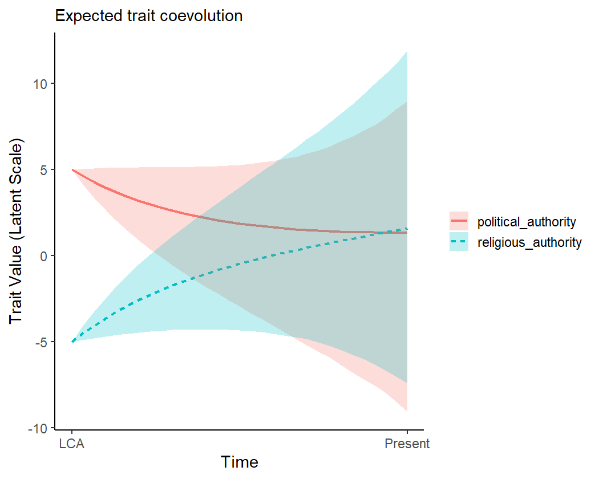

Introduction to the coevolve package
Scott Claessens
2024-12-23
Source:vignettes/coevolve.Rmd
coevolve.RmdIntroduction
This vignette provides an introduction to the coevolve package. It briefly describes the class of generalized dynamic phylogenetic models (GDPMs) that the package is designed to fit. It then runs through several working examples to showcase features of the package, including models with different response distributions, missing data, repeated observations, multiPhylo tree objects, and controls for spatial location.
The generalized dynamic phylogenetic model
In the coevolve package, the main function is
coev_fit(), which fits a generalized dynamic phylogenetic
model to taxa variables given the phylogenetic relationships among taxa.
The model allows the user to determine whether evolutionary change in
one variable precedes evolutionary change in another variable.
A full description of the model can be found in this pre-print. Briefly, the model represents observed variables as latent variables that are allowed to coevolve along an evolutionary time series. Coevolution unfolds according to a stochastic differential equation similar to an Ornstein-Uhlenbeck process, which contains both “selection” (tendency towards an optimum value) and “drift” (exogenous Gaussian noise) components. Change in the latent variables depend upon all other latent variables in the model and themselves, allowing users to assess the directional influence of one variable on future change in another variable.
Similar dynamic coevolutionary models are offered in programs like BayesTraits (see here). However, these models are limited to a small number of discrete traits. The coevolve package goes beyond these models by allowing the user to estimate coevolutionary effects between any number of variables and a much wider range of response distributions, including continuous, binary, ordinal, and count distributions.
A working example
To show the model in action, we will use data on political and religious authority among 97 Austronesian societies. Political and religious authority are both four-level ordinal variables representing whether each type of authority is absent (not present above the household level), sublocal (incorporating a group larger than the household but smaller than the local community), local (incorporating the local community) and supralocal (incorporating more than one local community). These data were compiled by Sheehan et al. (2023).
language political_authority religious_authority
1 Aiwoo Sublocal Sublocal
2 Alune Supralocal Supralocal
3 AnejomAneityum Supralocal Supralocal
4 Anuta Local Local
5 Atoni Supralocal Supralocal
6 Baree Local LocalEach society is on a separate row and is linked to a different
Austronesian language. These languages can be represented on a
linguistic phylogeny (see authority$phylogeny). We are
interested in using this phylogeny to understand how political and
religious authority have coevolved over the course of Austronesian
cultural evolution.
To fit the generalized dynamic phylogenetic model, we use the
coev_fit() function. Internally, this function builds the
Stan code, builds a data list, and then compiles and fits the model
using the cmdstanr package.
Users can run these steps one-by-one using the
coev_make_stancode() and coev_make_standata()
functions, but for brevity we just use the coev_fit()
function.
fit1 <-
coev_fit(
data = authority$data,
variables = list(
political_authority = "ordered_logistic",
religious_authority = "ordered_logistic"
),
id = "language",
tree = authority$phylogeny,
# set manual prior
prior = list(A_offdiag = "normal(0, 2)"),
# return log likelihood
log_lik = TRUE,
# additional arguments for cmdstanr
parallel_chains = 4,
iter_sampling = 2000,
iter_warmup = 2000,
refresh = 0,
seed = 1
)Running MCMC with 4 parallel chains...
Chain 2 finished in 878.0 seconds.
Chain 4 finished in 1213.6 seconds.
Chain 1 finished in 1228.8 seconds.
Chain 3 finished in 1251.5 seconds.
All 4 chains finished successfully.
Mean chain execution time: 1143.0 seconds.
Total execution time: 1252.7 seconds.The function takes several arguments, including a dataset, a named
list of variables that we would like to coevolve in the model (along
with their associated response distributions), the column in the dataset
that links to the phylogeny tip labels, and a phylogeny of class
phylo. The function sets priors for the parameters by
default, but it is possible for the user to manually set these priors.
The user can also pass additional arguments to cmdstanr’s
sample() method which runs under the hood.
Once the model has fitted, we can print a summary of the parameters.
summary(fit1)Variables: political_authority = ordered_logistic
religious_authority = ordered_logistic
Data: authority$data (Number of observations: 97)
Phylogeny: authority$phylogeny (Number of trees: 1)
Draws: 4 chains, each with iter = 2000; warmup = 2000; thin = 1
total post-warmup draws = 8000
Autoregressive selection effects:
Estimate Est.Error 2.5% 97.5% Rhat Bulk_ESS Tail_ESS
political_authority -0.67 0.52 -1.97 -0.03 1.00 5036 4459
religious_authority -0.78 0.57 -2.13 -0.03 1.00 5461 3926
Cross selection effects:
Estimate Est.Error 2.5% 97.5% Rhat Bulk_ESS Tail_ESS
political_authority ⟶ religious_authority 2.28 0.99 0.34 4.26 1.00 3310 3706
religious_authority ⟶ political_authority 1.81 1.11 -0.36 4.08 1.00 2068 3963
Drift parameters:
Estimate Est.Error 2.5% 97.5% Rhat Bulk_ESS Tail_ESS
sd(political_authority) 1.93 0.82 0.25 3.45 1.00 1446 1572
sd(religious_authority) 1.27 0.79 0.06 2.91 1.00 1478 3513
cor(political_authority,religious_authority) 0.26 0.31 -0.42 0.77 1.00 5593 6287
Continuous time intercept parameters:
Estimate Est.Error 2.5% 97.5% Rhat Bulk_ESS Tail_ESS
political_authority 0.21 0.94 -1.65 2.01 1.00 8762 5444
religious_authority 0.21 0.94 -1.66 2.06 1.00 9553 5646
Ordinal cutpoint parameters:
Estimate Est.Error 2.5% 97.5% Rhat Bulk_ESS Tail_ESS
political_authority[1] -1.29 0.89 -3.03 0.51 1.00 5964 5452
political_authority[2] -0.55 0.87 -2.22 1.20 1.00 6278 5920
political_authority[3] 1.65 0.91 -0.08 3.49 1.00 6729 6160
religious_authority[1] -1.51 0.92 -3.30 0.29 1.00 6792 5557
religious_authority[2] -0.82 0.90 -2.58 0.97 1.00 7241 6064
religious_authority[3] 1.60 0.93 -0.15 3.49 1.00 6983 6370Warning: There were 18 divergent transitions after warmup.
http://mc-stan.org/misc/warnings.html#divergent-transitions-after-warmupWe can see a printed summary of the model parameters, including the autoregressive effects (i.e., the effects of variables on themselves in the future), the cross effects (i.e., the effects of variables on the other variables in the future), the amount of drift, correlated drift, the continuous time intercepts for the stochastic differential equation, and the ordinal cutpoints for both variables.
While the summary output is useful, it is difficult to interpret the parameters directly to make inferences about coevolutionary patterns. An alternative approach is to directly “intervene” in the system. By doing this, we can better understand how increases or decreases in a variable change the equilibrium trait values of other variables in the system. For example, we can hold one variable at its average value and then increase it by a standardised amount to see how the equilibrium value for the other trait changes.
The function coev_calculate_delta_theta() allows the
user to calculate \(\Delta\theta_{z}\),
which is defined as the change in the equilibrium trait value for one
variable which results from a median absolute deviation increase in
another variable. This function returns a posterior distribution. We can
easily visualise the posterior distributions for all cross effects at
once using the function coev_plot_delta_theta().
coev_plot_delta_theta(fit1)This plot shows the posterior distribution, the posterior median, and the 66% and 95% credible intervals for \(\Delta\theta_{z}\). We can conclude that political and religious authority both influence each other in their evolution. A one median absolute deviation increase in political authority results in an increase in the equilibrium trait value for religious authority, and vice versa. In other words, these two variables coevolve reciprocally over time.
There are several ways to visualise this runaway coevolutionary
process: (1) a flow field of evolutionary change, (2) a selection
gradient plot, and (3) a time series simulation of evolutionary
dynamics. In order to make these various plots more understandable, it
is useful to first plot where the different taxa are situated in latent
trait space. We can do this using the
coev_plot_trait_values() function, which produces a pairs
plot of estimated trait values for all the variables in the model (along
with associated posterior uncertainty on the diagonal).
coev_plot_trait_values(fit1, xlim = c(-5, 7), ylim = c(-5, 7))
Now that we have a good sense of the trait space, we can plot a flow
field of evolutionary change. The coev_plot_flowfield()
function plots the strength and direction of evolutionary change at
different locations in trait space.
coev_plot_flowfield(
object = fit1,
var1 = "political_authority",
var2 = "religious_authority",
limits = c(-5, 5)
)The arrows in this plot tend to point towards the upper right-hand corner, suggesting that political and religious authority evolve towards higher levels in a runaway coevolutionary process.
We can also visualise the coevolutionary dynamics with a selection
gradient plot. The function coev_plot_selection_gradient()
produces a heatmap which shows how selection acts on both variables at
different locations in trait space, with green indicating positive
selection and red indicating negative selection.
coev_plot_selection_gradient(
object = fit1,
var1 = "political_authority",
var2 = "religious_authority",
limits = c(-5, 5)
)
We can see from this plot that as each variable increases, the selection on the other variable increases.
Finally, we can “replay the past” by simulating these coevolutionary
dynamics over a time series. By default, the
coev_plot_pred_series() function uses the model-implied
ancestral states at the root of the phylogeny as starting points, and
allows the variables to coevolve over time. Shaded areas represent 95%
credible intervals for the predictions.
coev_plot_pred_series(fit1)
It is also possible to initialise the variables at different starting points, to see the implied coevolutionary dynamics. For example, we can imagine a case where the ancestral society had high levels of political authority but low levels of religious authority.
coev_plot_pred_series(
object = fit1,
eta_anc = list(
political_authority = 5,
religious_authority = -5
)
)
Available response distributions
In the above example, both variables were ordinal. As such, we declared both of them to follow the “ordered_logistic” response distribution. But the coevolve package supports several more response distributions.
| Response distribution | Data type | Link function |
|---|---|---|
| bernoulli_logit | Binary | Logit |
| ordered_logistic | Ordinal | Logit |
| poisson_softplus | Count | Softplus |
| negative_binomial_softplus | Count | Softplus |
| normal | Continuous real | - |
| gamma_log | Positive real | Log |
Different variables need not follow the same response distribution. This can be useful when users would like to assess the coevolution between variables of different types.
Handling missing data
Often in comparative datasets, data will be missing for some taxa.
Rather than remove cases if they have any missing data, the
coev_fit() function will automatically impute any missing
values in the model, using all available information.
We show this by modelling the coevolutionary relationships between brain weight and group size across 21 primate species from the Lemuriformes clade. Data on primate species were compiled by DeCasien et al. (2017). There are data for 143 primate species in total, but we focus on one clade to keep the example small and simple.
# filter dataset to Lemuriformes only
primates_data <- primates$data[primates$data$clade == "Lemuriformes",]
# prune phylogeny to Lemuriformes only
library(ape)
primates_phylogeny <- keep.tip(primates$phylogeny, primates_data$species)
# view data
head(primates_data[, c("species", "brain_weight", "group_size")]) species brain_weight group_size
13 Avahi_laniger 10.251355 2.666667
14 Avahi_occidentalis 8.236200 NA
44 Cheirogaleus_major 6.119797 5.500000
45 Cheirogaleus_medius 2.912291 2.000000
54 Daubentonia_madagascariensis 46.344725 1.750000
56 Eulemur_coronatus 21.394398 6.950000Both variables are positive reals, so we use the “gamma_log” distribution. While there are no missing data for the brain weight variable, some data are missing for the group size variable.
fit2 <-
coev_fit(
data = primates_data,
variables = list(
brain_weight = "gamma_log",
group_size = "gamma_log"
),
id = "species",
tree = primates_phylogeny,
# additional arguments for cmdstanr
parallel_chains = 4,
iter_sampling = 2000,
iter_warmup = 2000,
refresh = 0,
seed = 1
)Running MCMC with 4 parallel chains...
Chain 1 finished in 459.8 seconds.
Chain 3 finished in 477.3 seconds.
Chain 2 finished in 607.5 seconds.
Chain 4 finished in 634.7 seconds.
All 4 chains finished successfully.
Mean chain execution time: 544.8 seconds.
Total execution time: 634.8 seconds.
summary(fit2)Variables: brain_weight = gamma_log
group_size = gamma_log
Data: primates_data (Number of observations: 21)
Phylogeny: primates_phylogeny (Number of trees: 1)
Draws: 4 chains, each with iter = 2000; warmup = 2000; thin = 1
total post-warmup draws = 8000
Autoregressive selection effects:
Estimate Est.Error 2.5% 97.5% Rhat Bulk_ESS Tail_ESS
brain_weight -0.42 0.35 -1.34 -0.01 1.00 5998 3875
group_size -0.77 0.54 -2.01 -0.04 1.00 6044 3424
Cross selection effects:
Estimate Est.Error 2.5% 97.5% Rhat Bulk_ESS Tail_ESS
brain_weight ⟶ group_size 0.46 0.72 -1.12 1.76 1.00 2799 2861
group_size ⟶ brain_weight 0.62 0.94 -1.29 2.41 1.00 3113 3754
Drift parameters:
Estimate Est.Error 2.5% 97.5% Rhat Bulk_ESS Tail_ESS
sd(brain_weight) 1.07 0.22 0.67 1.56 1.00 2112 2198
sd(group_size) 0.69 0.44 0.04 1.66 1.01 784 1713
cor(brain_weight,group_size) 0.06 0.30 -0.53 0.62 1.00 7637 5552
Continuous time intercept parameters:
Estimate Est.Error 2.5% 97.5% Rhat Bulk_ESS Tail_ESS
brain_weight -0.25 0.85 -1.88 1.41 1.00 5417 5515
group_size -0.87 0.76 -2.32 0.66 1.00 5891 5285
Shape parameters:
Estimate Est.Error 2.5% 97.5% Rhat Bulk_ESS Tail_ESS
brain_weight 57.29 60.33 4.83 223.56 1.01 573 1593
group_size 5.99 12.12 1.43 28.40 1.01 826 784Warning: There were 91 divergent transitions after warmup.
http://mc-stan.org/misc/warnings.html#divergent-transitions-after-warmupNotice that the number of observations is still 21 in the summary output, informing us that all observations were retained and any missing data were imputed.
If we wanted instead to remove any taxa with missing data, we could
set complete_cases = TRUE when fitting the model.
Repeated observations
Another common feature of comparative datasets is repeated observations. In the previous examples, we had only one observation per taxon. But often there will be more than one observation for each taxon, such as when we have observed multiple individuals of the same species. In these cases, it can be useful to include all of these observations in the model and estimate the residual variation that is not due to the coevolutionary process.
We show this using an example dataset from de Villemereuil & Nakagawa (2014). Suppose we have measured two continuous variables (\(x\) and \(y\)) for 20 species, with five observations for each species.
head(repeated$data) species x y
1 sp_1 11.223724 107.41919
2 sp_1 9.805934 109.16403
3 sp_1 10.308423 91.88672
4 sp_1 8.355349 121.54341
5 sp_1 11.854510 105.31638
6 sp_2 4.314015 64.99859We can fit the dynamic coevolutionary model to this dataset.
fit3 <-
coev_fit(
data = repeated$data,
variables = list(
x = "normal",
y = "normal"
),
id = "species",
tree = repeated$phylogeny,
# additional arguments for cmdstanr
parallel_chains = 4,
iter_warmup = 2000,
iter_sampling = 2000,
refresh = 0,
seed = 1
)Running MCMC with 4 parallel chains...
Chain 2 finished in 605.4 seconds.
Chain 4 finished in 624.9 seconds.
Chain 3 finished in 851.5 seconds.
Chain 1 finished in 852.4 seconds.
All 4 chains finished successfully.
Mean chain execution time: 733.5 seconds.
Total execution time: 852.4 seconds.
summary(fit3)Variables: x = normal
y = normal
Data: repeated$data (Number of observations: 100)
Phylogeny: repeated$phylogeny (Number of trees: 1)
Draws: 4 chains, each with iter = 2000; warmup = 2000; thin = 1
total post-warmup draws = 8000
Autoregressive selection effects:
Estimate Est.Error 2.5% 97.5% Rhat Bulk_ESS Tail_ESS
x -1.57 0.77 -3.18 -0.20 1.00 3920 2089
y -1.32 0.71 -2.78 -0.12 1.00 4906 3238
Cross selection effects:
Estimate Est.Error 2.5% 97.5% Rhat Bulk_ESS Tail_ESS
x ⟶ y 0.42 0.85 -1.25 2.07 1.00 6608 5754
y ⟶ x 0.03 0.87 -1.71 1.73 1.00 6875 5415
Drift parameters:
Estimate Est.Error 2.5% 97.5% Rhat Bulk_ESS Tail_ESS
sd(x) 2.94 0.32 2.37 3.63 1.00 4183 5327
sd(y) 2.58 0.29 2.05 3.20 1.00 4666 5667
cor(x,y) 0.88 0.06 0.72 0.96 1.00 3234 4999
Continuous time intercept parameters:
Estimate Est.Error 2.5% 97.5% Rhat Bulk_ESS Tail_ESS
x -0.03 0.79 -1.59 1.51 1.00 6792 6144
y 0.06 0.78 -1.51 1.58 1.00 7337 5761
Residual parameters:
Estimate Est.Error 2.5% 97.5% Rhat Bulk_ESS Tail_ESS
sd(x) 0.28 0.02 0.23 0.33 1.00 8310 5374
sd(y) 0.29 0.02 0.25 0.34 1.00 8427 5323
cor(x,y) -0.18 0.11 -0.38 0.03 1.00 7568 5759Warning: There were 36 divergent transitions after warmup.
http://mc-stan.org/misc/warnings.html#divergent-transitions-after-warmupIn the model output, we can see that coev_fit() has
detected the presence of repeated observations and has consequently
modelled residual standard deviation and residual correlation parameters
for \(x\) and \(y\).
Using multiPhylo tree objects
Often, we would like to average our analysis over a posterior set of phylogenetic trees, rather than use a single tree. This can be a useful way to account for phylogenetic uncertainty in our inferences.
To deal with phylogenetic uncertainty, the coev_fit()
function allows the user to declare multiPhylo objects in the
tree argument. So long as all trees in the multiPhylo
object have the same number of taxa with the same tip labels, the Stan
code will average over all the trees within the same model.
To keep the computation time short, we imagine a simple case where we have a multiPhylo object with two identical Austronesian language phylogenies. While the results should be the same in this case as there is no phylogenetic uncertainty, users should expect differing results when using sets of different trees.
authority_multiphylo <- c(
authority$phylogeny,
authority$phylogeny
)
authority_multiphylo2 phylogenetic trees
fit4 <-
coev_fit(
data = authority$data,
variables = list(
political_authority = "ordered_logistic",
religious_authority = "ordered_logistic"
),
id = "language",
# use multiPhylo tree object
tree = authority_multiphylo,
# set manual prior
prior = list(A_offdiag = "normal(0, 2)"),
# additional arguments for cmdstanr
parallel_chains = 4,
iter_sampling = 2000,
iter_warmup = 2000,
refresh = 0,
seed = 1
)Running MCMC with 4 parallel chains...
Chain 4 finished in 1598.6 seconds.
Chain 3 finished in 1625.2 seconds.
Chain 2 finished in 1633.5 seconds.
Chain 1 finished in 2088.5 seconds.
All 4 chains finished successfully.
Mean chain execution time: 1736.5 seconds.
Total execution time: 2088.7 seconds.
summary(fit4)Variables: political_authority = ordered_logistic
religious_authority = ordered_logistic
Data: authority$data (Number of observations: 97)
Phylogeny: authority_multiphylo (Number of trees: 2)
Draws: 4 chains, each with iter = 2000; warmup = 2000; thin = 1
total post-warmup draws = 8000
Autoregressive selection effects:
Estimate Est.Error 2.5% 97.5% Rhat Bulk_ESS Tail_ESS
political_authority -0.64 0.52 -1.95 -0.02 1.00 5950 3489
religious_authority -0.70 0.55 -2.07 -0.03 1.00 6287 4187
Cross selection effects:
Estimate Est.Error 2.5% 97.5% Rhat Bulk_ESS Tail_ESS
political_authority ⟶ religious_authority 2.05 1.03 0.37 4.34 1.00 2690 5116
religious_authority ⟶ political_authority 2.12 1.08 0.26 4.47 1.00 2419 3669
Drift parameters:
Estimate Est.Error 2.5% 97.5% Rhat Bulk_ESS Tail_ESS
sd(political_authority) 1.11 0.83 0.04 2.94 1.00 910 2354
sd(religious_authority) 0.88 0.68 0.03 2.50 1.00 1456 2887
cor(political_authority,religious_authority) 0.05 0.33 -0.60 0.66 1.00 4522 5683
Continuous time intercept parameters:
Estimate Est.Error 2.5% 97.5% Rhat Bulk_ESS Tail_ESS
political_authority 0.34 0.91 -1.43 2.11 1.00 9445 6549
religious_authority 0.42 0.92 -1.40 2.18 1.00 10164 5564
Ordinal cutpoint parameters:
Estimate Est.Error 2.5% 97.5% Rhat Bulk_ESS Tail_ESS
political_authority[1] -1.55 0.90 -3.36 0.15 1.00 6041 5141
political_authority[2] -0.81 0.88 -2.59 0.85 1.00 6578 5453
political_authority[3] 1.92 0.95 0.11 3.83 1.00 7628 5767
religious_authority[1] -1.83 0.88 -3.62 -0.13 1.00 6347 5593
religious_authority[2] -1.15 0.85 -2.87 0.52 1.00 7035 5596
religious_authority[3] 1.67 0.93 -0.06 3.61 1.00 4677 4682Warning: There were 18 divergent transitions after warmup.
http://mc-stan.org/misc/warnings.html#divergent-transitions-after-warmupThe summary output correctly shows that we averaged over two trees. Note that with more trees, users should expect the computation time for these models to increase.
Controlling for spatial location
If we have data on the spatial location of taxa, sometimes it is useful to control for this spatial location to ensure that our model is capturing deep ancestral relationships rather than more recent diffusion among neighbours. For example, when studying the coevolution of political and religious authority in Austronesian societies, we would like to ensure that our results are due to coevolution over deep cultural time rather than more recent borrowing among societies with close geographic proximity.
The dist_mat argument in the coev_fit()
function allows us to easily control for spatial proximity. This
argument takes a distance matrix between all taxa in the phylogeny. If
the distance matrix is specified by the user, the function includes in
the Stan code a separate Gaussian Process over spatial location for each
variable in the model.
Here is the geographic distance matrix (measured in metres) for the first five Austronesian societies:
authority$distance_matrix[1:5, 1:5] Aiwoo Alune AnejomAneityum Anuta Atoni
Aiwoo 0.0 4250625.9 1158010.2 408692.9 4602028.5
Alune 4250625.9 0.0 4863176.7 4649868.1 865094.2
AnejomAneityum 1158010.2 4863176.7 0.0 951671.2 5013641.1
Anuta 408692.9 4649868.1 951671.2 0.0 4977783.9
Atoni 4602028.5 865094.2 5013641.1 4977783.9 0.0We can include this distance matrix in the model. The matrix is scaled to vary between 0 and 1 under the hood to improve model sampling.
fit5 <-
coev_fit(
data = authority$data,
variables = list(
political_authority = "ordered_logistic",
religious_authority = "ordered_logistic"
),
id = "language",
tree = authority$phylogeny,
# declare distance matrix and covariance kernel
dist_mat = authority$distance_matrix,
dist_cov = "exp_quad",
# set manual prior
prior = list(A_offdiag = "normal(0, 2)"),
# return log likelihood
log_lik = TRUE,
# additional arguments for cmdstanr
parallel_chains = 4,
iter_sampling = 2000,
iter_warmup = 2000,
refresh = 0,
seed = 1
)Running MCMC with 4 parallel chains...Chain 3 finished in 1566.6 seconds.
Chain 1 finished in 1660.9 seconds.
Chain 4 finished in 2080.0 seconds.
Chain 2 finished in 2086.5 seconds.
All 4 chains finished successfully.
Mean chain execution time: 1848.5 seconds.
Total execution time: 2086.7 seconds.
summary(fit5)Variables: political_authority = ordered_logistic
religious_authority = ordered_logistic
Data: authority$data (Number of observations: 97)
Phylogeny: authority$phylogeny (Number of trees: 1)
Draws: 4 chains, each with iter = 2000; warmup = 2000; thin = 1
total post-warmup draws = 8000
Autoregressive selection effects:
Estimate Est.Error 2.5% 97.5% Rhat Bulk_ESS Tail_ESS
political_authority -0.69 0.54 -1.99 -0.03 1.00 5230 3961
religious_authority -0.77 0.58 -2.15 -0.03 1.00 5743 3919
Cross selection effects:
Estimate Est.Error 2.5% 97.5% Rhat Bulk_ESS Tail_ESS
political_authority ⟶ religious_authority 2.02 1.19 -0.45 4.34 1.00 2142 2494
religious_authority ⟶ political_authority 1.65 1.23 -0.81 4.06 1.00 2656 3526
Drift parameters:
Estimate Est.Error 2.5% 97.5% Rhat Bulk_ESS Tail_ESS
sd(political_authority) 1.52 0.80 0.11 3.11 1.00 1181 2182
sd(religious_authority) 1.02 0.69 0.05 2.54 1.00 1427 2927
cor(political_authority,religious_authority) 0.16 0.33 -0.51 0.74 1.00 5589 5523
Continuous time intercept parameters:
Estimate Est.Error 2.5% 97.5% Rhat Bulk_ESS Tail_ESS
political_authority 0.32 0.94 -1.52 2.16 1.00 8469 5212
religious_authority 0.30 0.97 -1.60 2.17 1.00 7767 5844
Ordinal cutpoint parameters:
Estimate Est.Error 2.5% 97.5% Rhat Bulk_ESS Tail_ESS
political_authority[1] -1.49 0.98 -3.41 0.44 1.00 5038 5486
political_authority[2] -0.77 0.96 -2.64 1.16 1.00 4991 5665
political_authority[3] 1.38 1.01 -0.58 3.42 1.00 4106 5215
religious_authority[1] -1.62 1.01 -3.58 0.38 1.00 6003 5297
religious_authority[2] -0.96 1.00 -2.84 1.01 1.00 6071 5604
religious_authority[3] 1.46 1.04 -0.52 3.56 1.00 5740 5616
Gaussian Process parameters for distances:
Estimate Est.Error 2.5% 97.5% Rhat Bulk_ESS Tail_ESS
rho(political_authority) 0.05 0.09 0.00 0.33 1.00 1110 2047
rho(religious_authority) 0.06 0.11 0.00 0.39 1.00 626 2322
sdgp(political_authority) 1.82 1.21 0.16 4.73 1.00 1871 1720
sdgp(religious_authority) 2.12 1.40 0.16 5.34 1.01 1185 2182Warning: There were 630 divergent transitions after warmup.
http://mc-stan.org/misc/warnings.html#divergent-transitions-after-warmupThe summary output shows that the model has estimated the parameters for two Gaussian Process functions over geographic locations, one for each variable.
Model comparison
When we set log_lik = TRUE, the underlying Stan code for
these models returns a log likelihood vector for all observations. With
this, it is possible to compare different models using methods like
approximate leave-one-out cross-validation. For example, we can use the
loo_compare() function from the loo package to see whether
adding the distance matrix in the authority example improved our
out-of-sample predictive accuracy.
library(loo)
loo_compare(
list(
fit1 = fit1$fit$loo(), # authority model without distance matrix
fit5 = fit5$fit$loo() # authority model with distance matrix
)
) elpd_diff se_diff
fit5 0.0 0.0
fit1 -1.9 2.8 This model comparison suggests that adding spatial location to the model did not improve out-of-sample predictive accuracy.
This model comparison approach may also be useful for comparing
models with different cross selection effects constrained to zero (see
the effects_mat argument in the coev_fit()
function). The user can then test whether “turning on” a particular
cross selection effect improves model fit. However, currently it is not
possible to compare models that include different coevolving variables,
as the datasets and resulting log likelihood vectors vary between
models.
Conclusion
We hope that this package is a useful addition to the phylogenetic comparative methods toolkit. If you have any questions about the package, please feel free to email Scott Claessens (scott.claessens@gmail.com) or Erik Ringen (erikjacob.ringen@uzh.ch) or raise an issue over on GitHub: https://github.com/ScottClaessens/coevolve/issues
References
DeCasien, A. R., Williams, S. A., & Higham, J. P. (2017). Primate brain size is predicted by diet but not sociality. Nature Ecology & Evolution, 1(5), 0112.
de Villemereuil P. & Nakagawa, S. (2014). General quantitative genetic methods for comparative biology. In L. Garamszegi (Ed.), Modern phylogenetic comparative methods and their application in evolutionary biology: concepts and practice (pp. 287-303). Springer, New York.
Sheehan, O., Watts, J., Gray, R. D., Bulbulia, J., Claessens, S., Ringen, E. J., & Atkinson, Q. D. (2023). Coevolution of religious and political authority in Austronesian societies. Nature Human Behaviour, 7(1), 38-45.